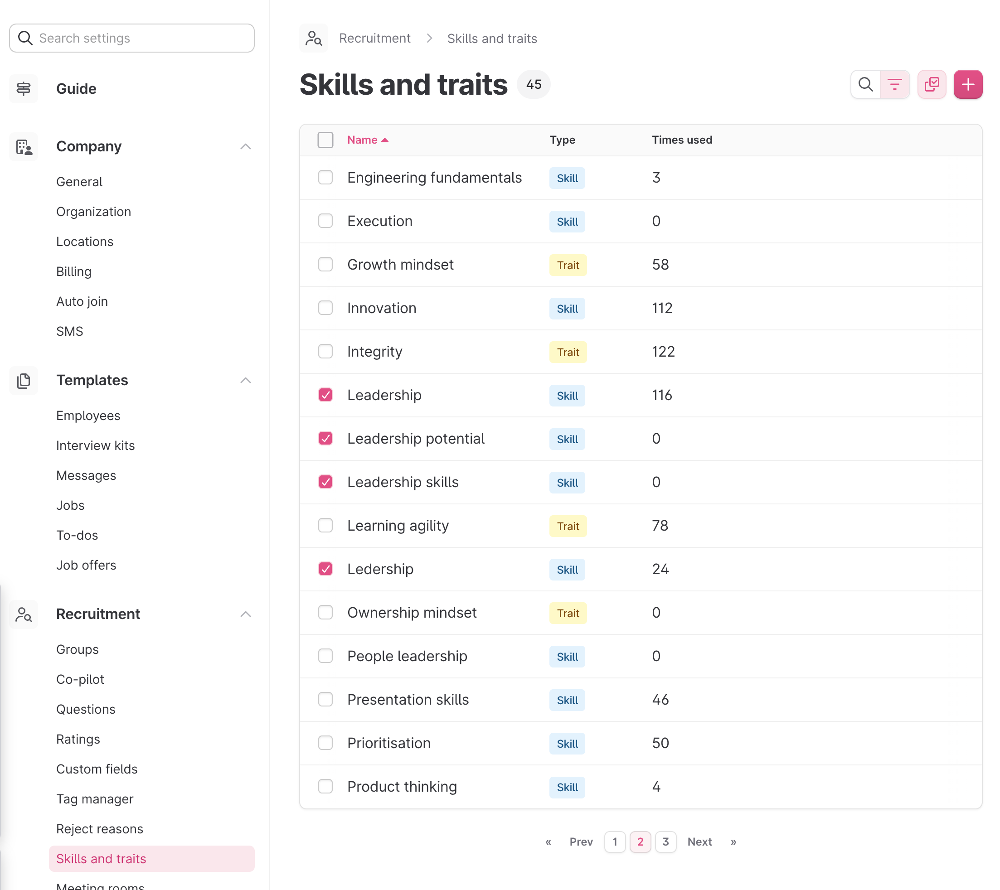
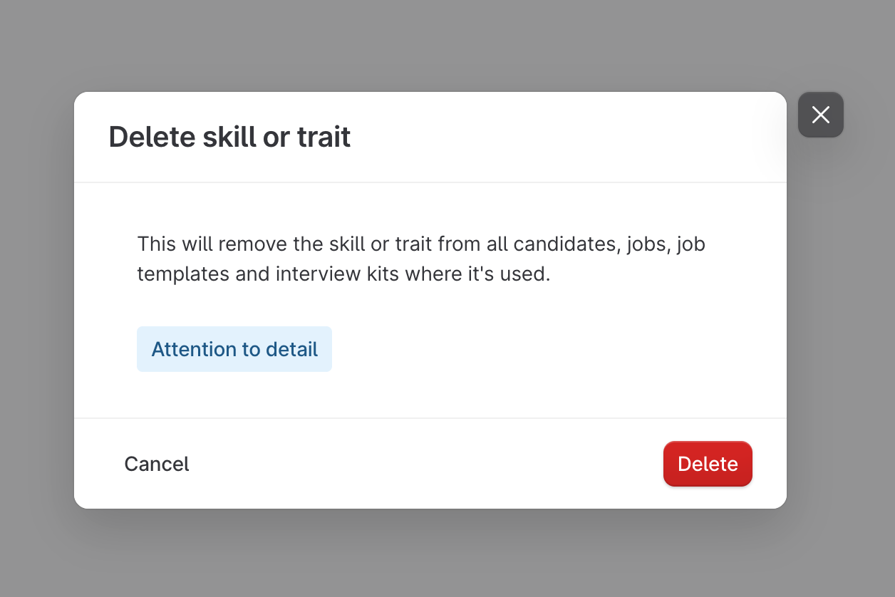
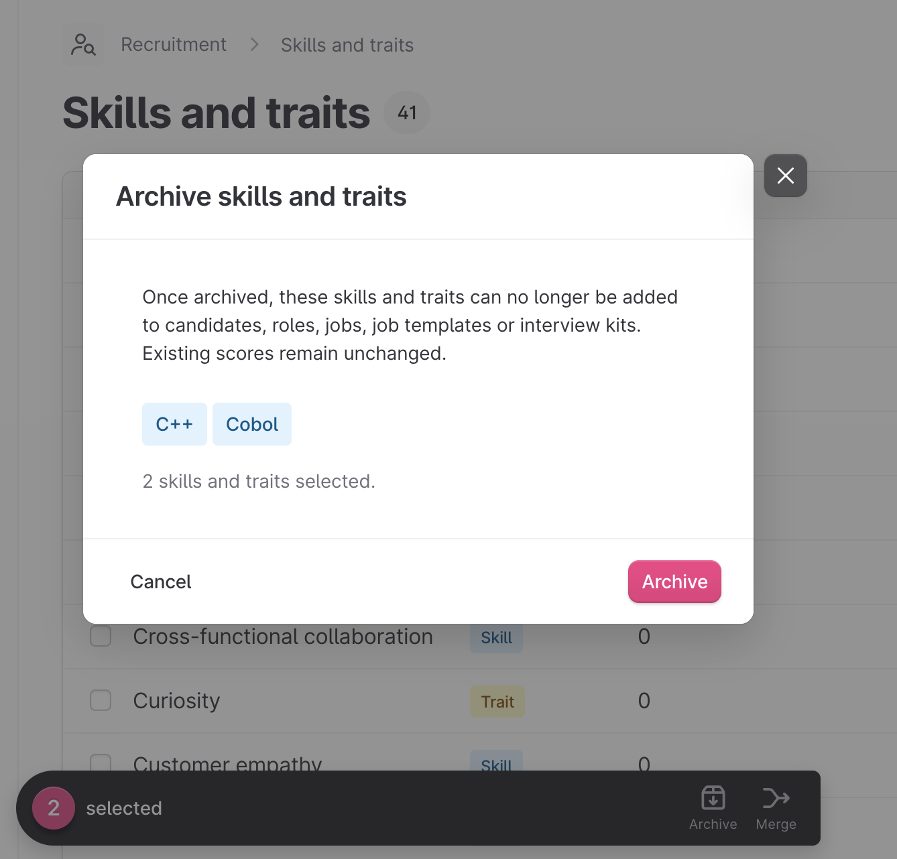
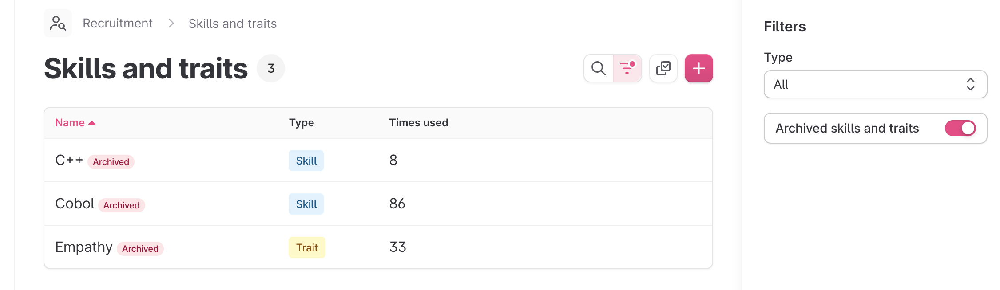
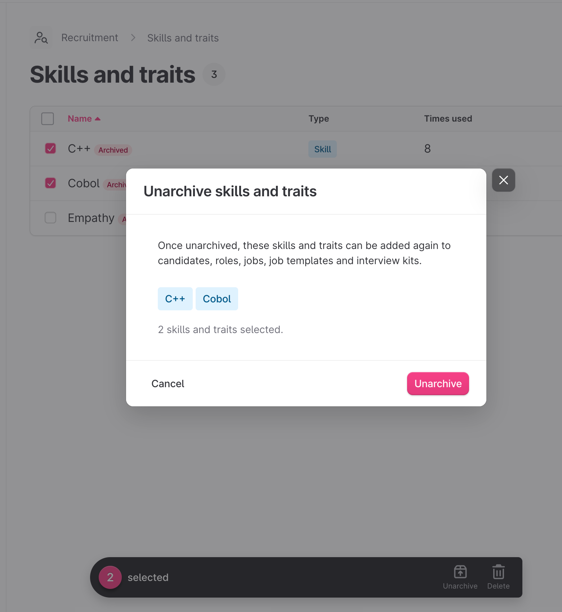
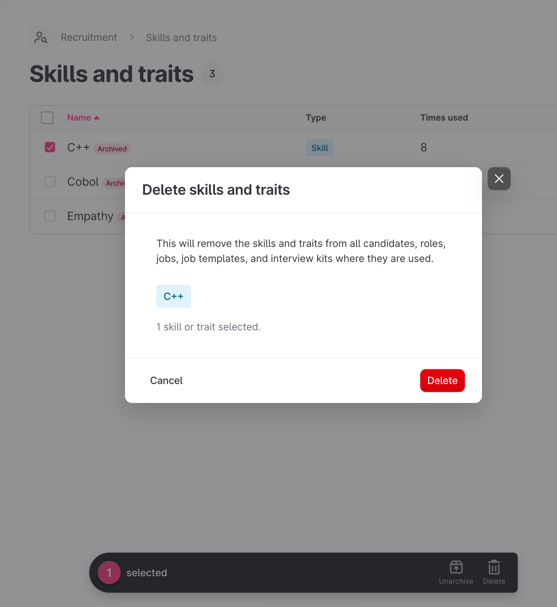
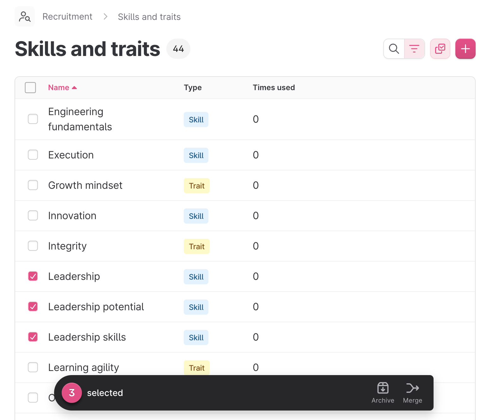
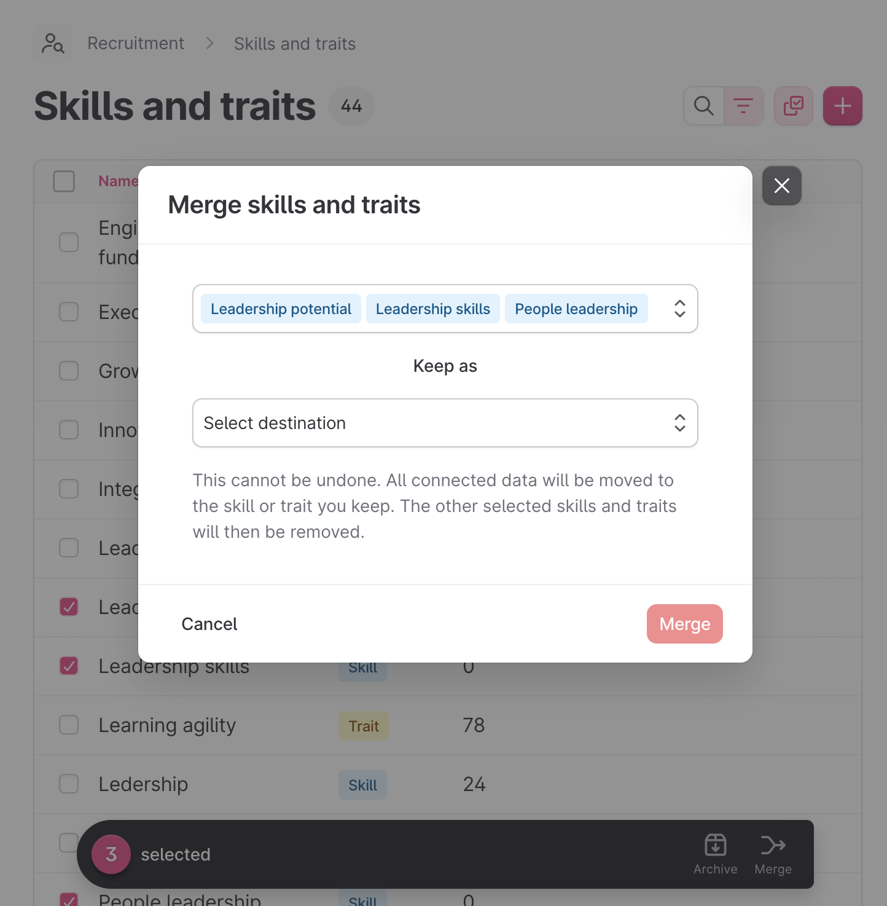
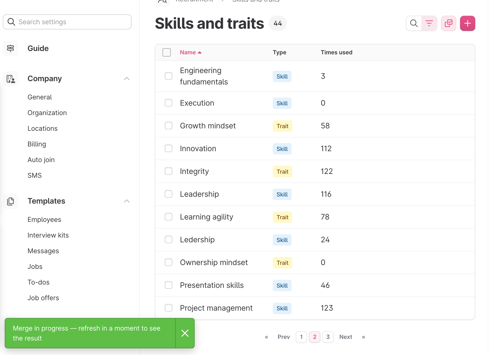
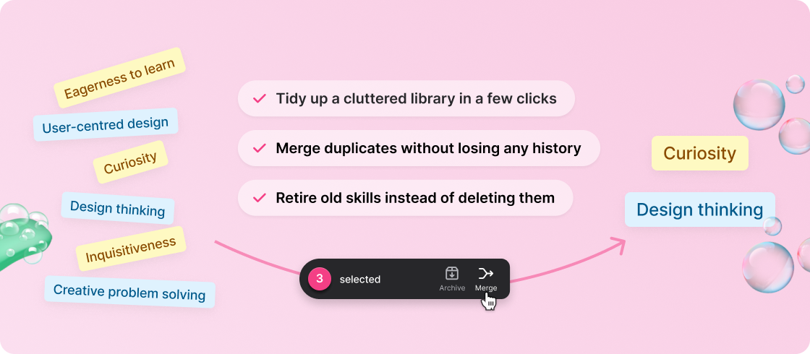

Two ways to clean up a messy skills and traits library — the safe way.
The team
Quick beat — who built this. Three of us: Nicklas, Sebastian and Beatriz. Keep it short and move on to the problem.
The problem
Over time, Skills and Traits libraries drift and
duplicates pile up.
They create fricton, confusion and skew the data.

This is the whole pitch in one screenshot. Four Leadership variants, each with its own "times used" — 6, 3, 2, 1. That's one competency scored four ways, and no report can tell they're the same thing. The pain isn't cosmetic: fragmented counts make the picker untrustworthy and quietly skew every competency-level insight.
Before
Permanent deletion used to be the only option. It was a very rough tool as there is no undo and every trace of the skill or trait is lost forever. This ment that most libraries just kept growing.

Frame this as the trap, not a feature. Delete forced a lose-lose: keep the mess, or destroy data to clean it. Because nobody wants to throw away evaluation history, the rational choice was to do nothing — which is exactly why these libraries rot.
The solution
Instead of one destructive option, there are now two safe ones. The user reaches for whichever fits their mess.
Retire an entry you no longer score against. It leaves every picker but keeps all its history — and you
can bring it back any time.
Best for: skills and traits you've simply stopped using.
Fold duplicates into the one you want to keep. Everything attached to them moves across, and the counts
add up.
Best for: several names for one idea.
The thesis slide: the old answer was "delete and lose data." The new answer is two non-destructive tools. The rest of the deck walks each one through the UI, then shows why each beats deleting or ignoring, and finally the data-integrity work that makes both safe to hand to every customer.
Archive · step 1 of 4

Select the entries you no longer score against and archive them — one at a time, or in bulk.
Lead with the everyday case: a skill the company stopped using. Archiving is the low-stakes tool — it hides the entry everywhere it can be picked, but changes nothing about the data behind it.
Archive · step 2 of 4

Archived entries drop out of every picker but live on under the Archived filter — tagged Archived, with their scoring history fully intact.
Land the everyday support point: archived items disappear from pickers, so "a skill went missing" almost always means it was archived. Nothing was destroyed — the entries are right here, one filter away, ready to unarchive.
Archive · step 3 of 4

Archived entries live on under the Archived filter. Unarchive any time and they're selectable again — across candidates, roles, jobs, job templates and interview kits — with their scoring history intact.
This is the reassurance that makes archiving the safe default: nothing about it is permanent. If someone reports a skill "went missing", it was almost certainly archived — and getting it back is one click. The scores never moved, so the entry returns with its full history intact.
Archive · step 4 of 4

When you're certain, an entry can still be hard-deleted for good — but only from the Archived view. Archiving first is the deliberate speed bump before anything is destroyed.
Close the archive arc on the safety property: delete didn't go away, it moved behind archiving. You can only reach it from the Archived filter, so the destructive action now takes two deliberate steps instead of one stray click. That's the whole point — cleanup without accidental data loss.
When to merge
The bridge slide. Archiving hides; it doesn't combine. The moment you have duplicates — four names for one competency — archiving three of them throws away their usage and history. Merge is the tool that keeps every score and consolidates them. Use this beat to reset the audience before the merge walkthrough.
Merge · step 1 of 3

Bulk-select the three weaker variants. Leadership — the one we keep — stays unchecked.
Walk it slowly: turn on bulk select, tick the three sources. The merge action only appears once two or more rows are selected, which is also the guard against an accidental single-row "merge".
Merge · step 2 of 3

The modal lists the sources as tags and asks one thing: which entry survives? Keep Leadership. Confirming hands the work to a background job.
The source tags are the deliberate signal — chosen over an affected-counts preview, because they answer the question that actually prevents mistakes: "am I merging the right things into the right target?" Naming the survivor is the only decision the recruiter has to make. Confirming runs the merge in the background; for a real-world library it's near-instant.
Merge · step 3 of 3

The three variants are gone, everything that used to be scattered across four rows is now whole.
The whole pitch in one number. 6 + 3 + 2 + 1 = 12, and nothing was double-counted or dropped — the count is the proof that every attached record followed the merge. The picker is clean, and analytics now see one competency where they used to see four.
The data integrity angle
The pivot slide: from what the tools do to why they're safe to hand every customer. Archive is the easy half — a reversible status change. Merge is where the real integrity work lives, because "move a skill" is actually "move everything attached to it, all at once, safely." That's the next slide.
Data integrity
Both cleanup tools are engineered to safeguard the customer's data at every step.
Merges are atomic, There's never a half-merged library to clean up.
Scores, picks, questions, candidate competencies and interview-kit order all re-point to the kept entry.
Archive is reversible and Merge migrates every datapoint with no history loss, including analytics.
Every archive and merge action taken is logged in the audit trail.
This was the deepest part of the work, framed for the audience as three product guarantees. Under the hood: five relation types reassigned inside a single atomic transaction, rows locked in a stable id order so two concurrent merges can't deadlock, and a product-agreed rule to union conflicting questions onto the survivor. The caps (50 sources, 5,000 records) keep a worker comfortable; anything bigger has a runbook. Tenant safety is the one to dwell on — the job re-scopes source ids to the company at run time, so another tenant's rows simply aren't in scope. Side effects (insights re-tracking, search reindex, Job Match Score recompute) fire after the transaction commits, and the audit record is the recovery surface if a merge ever needs tracing.
